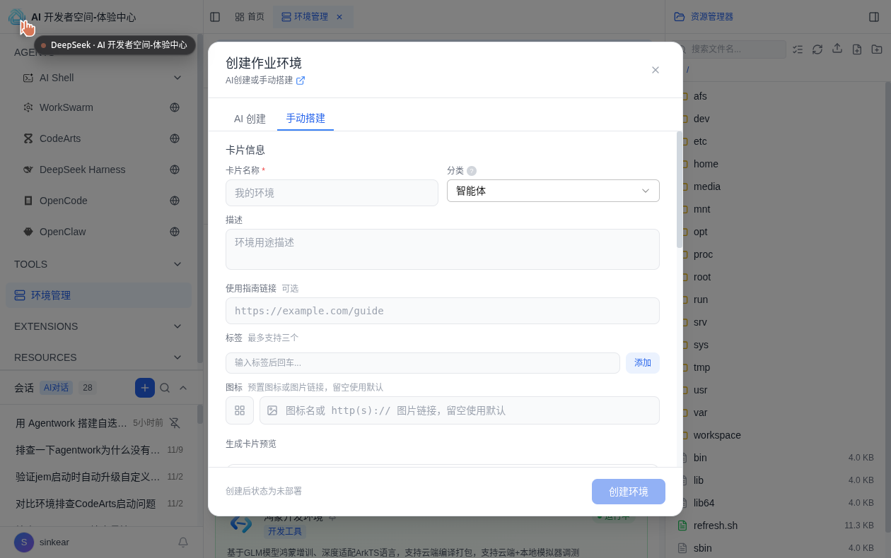
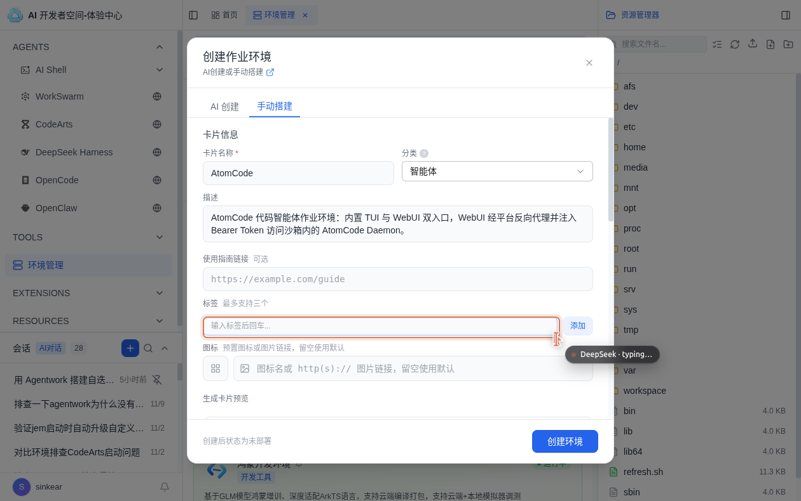
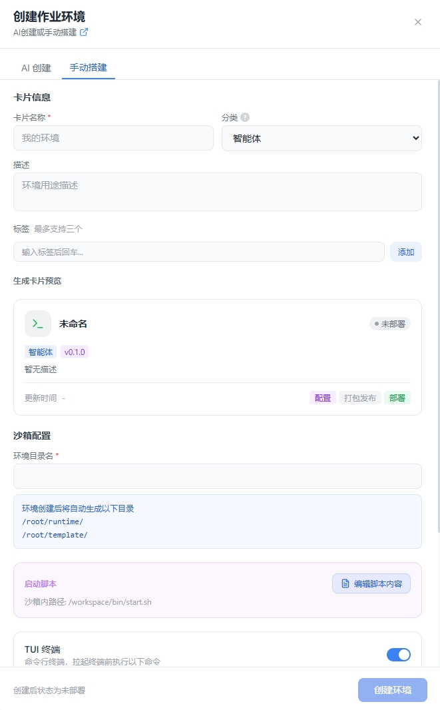
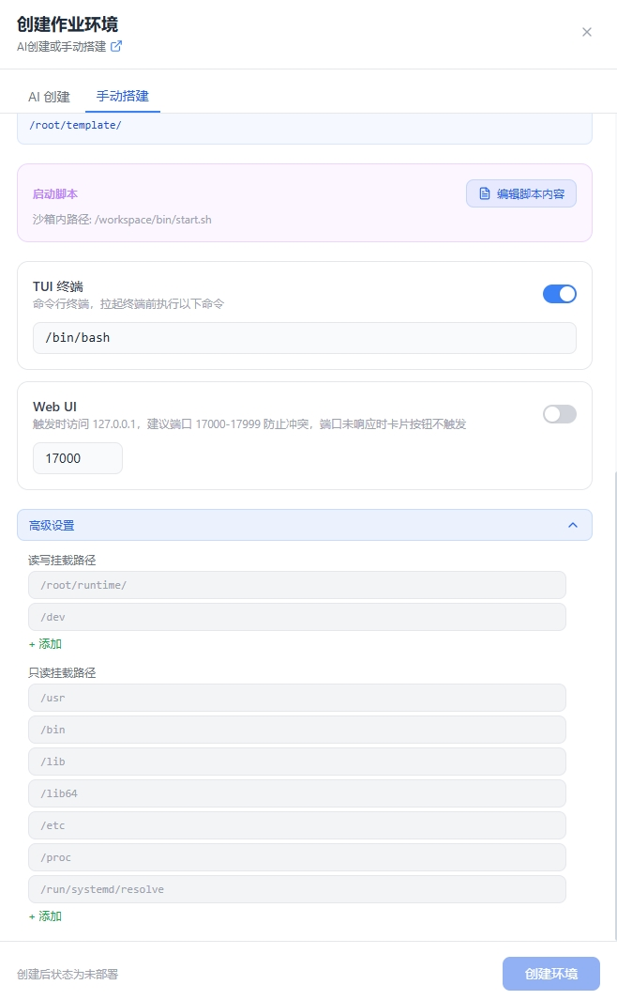

A1
切到「手动搭建」tab
UI 点击目标：看见空表单，而不是 AI 聊天框。
- 在环境管理页点右上角 创建，弹窗默认停在 AI 创建。
- 点弹窗顶部的 手动搭建 tab。
- 表单自上而下是：卡片信息 → 沙箱配置 → 启动脚本 → TUI 终端 → Web UI 端口 → 高级设置。

点击放大✅
完成标志：表单出现「卡片名称」「环境目录名」两个带
* 的必填项，底部是创建环境按钮。A2
填卡片信息与沙箱配置
以 AtomCode 为例（一个 Rust 写的开源终端 AI 编码助手，TUI + WebUI 双界面）。

点击放大/root/runtime/atomcode/bin/atomcode、WebUI 端口 17092高级设置里那个「只读挂载路径 /usr/local/bin」为什么非加不可
caddy 在
另外：读写挂载路径里的
/usr/local/bin/caddy，但 bwrap 用 --tmpfs /usr/local/bin 把这个目录覆盖成空的。
在高级设置 → 只读挂载路径里加 /usr/local/bin，整个目录才会被 ro-bind 挂回来，沙箱里才看得见 caddy。
另外：读写挂载路径里的
/root/runtime/atomcode 是根据环境目录名自动置顶生成的，不用手动添加。
✅
完成标志：蓝色提示框实时显示出两个目录路径；TUI 与 WebUI 各自有开关且已打开。
A3
点「创建环境」→ 卡片变「未部署」
- 点弹窗底部 创建环境。
- 弹窗关闭，列表里出现一张 未部署 的卡片。此时它还不能点 TUI / WebUI。
✅
完成标志：卡片状态徽标是未部署，操作区只有 部署、配置、删除——没有 TUI/WebUI。下一步就是把它部署起来。
A4
（可选）对着官方图核对每一项
文档里的两张表单全貌图，可以用来核对你有没有漏掉某个区块。

点击放大
点击放大